События
Встраиваемые системы реального времени должны предпринимать некоторые действия в ответ на события (event), приходящие от внешнего окружения. Например пакет, который пришел в периферийное устройство Ethernet (событие) может требовать своей передачи в стек TCP/IP для обработки (действие).
Сложные системы будут иметь службу событий, которые приходят от разных источников, которые требуют разные процедуры обработки и разные требования к времени реакции. В каждом случае должно быть принято решение для реализации лучшей стратегии обработки события:
1. Как событие должно детектироваться? Обычно используются прерывания, но может также быть применен опрос входов (polling).
2. Когда используются прерывания, как много действий по обработке должно быть предпринято внутри обработчика прерывания (ISR), и как много действий нужно сделать вне обработчика прерывания? Обычно желательно сохранять размер ISR как можно меньше по времени выполнения.
3. Как события должны обмениваться информацией с главным кодом (не ISR), и как этот код должен быть структурирован, чтобы лучше всего совместить обработку потенциально асинхронных процессов?
FreeRTOS не предоставляет разработчику приложения никакую специальную стратегию для обработки событий, но дает возможности для реализации выбранной стратегии простым и хорошо поддерживаемым методом.
Всегда помните, что любые функции API и макросы, которые оканчиваются на ‘FromISR’ или ‘FROM_ISR’, должны быть всегда использованы внутри обработчика прерывания (interrupt service routine, ISR).
3.2. Обработка отложенных (deferred) прерываний
Двоичные семафоры, используемые для синхронизации
Двоичные семафоры могут использоваться для разблокировки задачи каждый раз, когда возникает какое-то отдельное прерывание, чем можно эффективно засинхронизировать задачу с прерыванием. Это позволяет разместить почти весь код обработки события прерывания внутри синхронизированной задачи, оставляя в ISR только очень малую часть кода. Такая обработка прерывания называется 'отложенной' (deferred) для задачи-обработчика события.
Если обработка прерывания критична по времени реакции, то приоритет задачи обработки может быть назначен соответственно выше, чтобы обеспечить вытеснение обработчиком других задач в системе. Это произойдет сразу после завершения ISR. В результате достигается эффект обработки всех событий в основном коде, как если бы эта обработка была реализована непосредственно в коде ISR. Такая схема демонстрируется на рисунке 26.
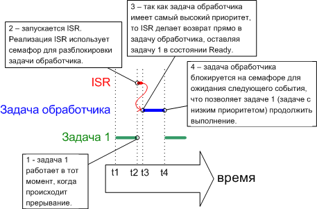
Рис. 26. Прерывание останавливает одну задачу, при этом делая возврат в другую задачу.
Задача обработчика использует блокирующий на семафоре вызов 'take' (взять), что подразумевает вхождение в состояние Blocked для ожидания момента события. Когда событие произойдет, ISR использует операцию 'give' (давать) на том же самом семафоре для разблокировки задачи обработчика, чтобы могла произойти требуемая обработка события.
Концепция семафора 'take' (взять) и 'give' (давать) может подразумевать разное, в зависимости от сценария использования. В классической терминологии семафоров 'взять семафор' эквивалентно операции P(), а 'дать семафор' эквивалентно операции V().
В этом сценарии синхронизации прерывания семафор концептуально может считаться очередью с длиной, равной 1. Очередь может содержать максимум один элемент в любой момент времени, так что очередь может быть либо пуста, либо полна (как двоичный флаг может быть либо сброшен, либо установлен, поэтому семафор двоичный). Путем вызова xSemaphoreTake() задача обработчика пытается прочитать из очереди на все время блокировки, что приведет ко входу задачи обработчика в состояние Blocked, если очередь пуста (т. е. событие пока не произошло). Когда событие произойдет, то ISR просто будет использовать функцию xSemaphoreGiveFromISR() для помещения токена (семафора) в очередь, что сделает очередь заполненной. Это приведет к выходу задачи обработчика из состояния Blocked, которая удалит токен, снова очистив очередь. Как только задача обработчика завершит свою обработку, она снова сделает попытку чтения из очереди, найдет очередь пустой и снова войдет в состояние Blocked для ожидания следующего события. Эта последовательность показана на рисунке 27.
На рисунке 27 видно, что прерывание 'дает' семафор в любом случае, даже если он еще не 'взят', и задача 'берет' семафор, но никогда не отдает его обратно. Поэтому описанный сценарий концептуально эквивалентен записи и чтению через очередь. Это часто вызывает путаницу, поскольку в других семафорных сценариях используются другие правила, где задача, которая берет семафор, должна всегда его отдать - такой сценарий описан в части 4.
API функция vSemaphoreCreateBinary()
Хендлы ко всем различным типам семафоров FreeRTOS сохраняются в переменной типа xSemaphoreHandle.
Перед тем, как семафор можно реально использовать, он должен быть сначала создан. Для создания двоичного семафора используется API функция vSemaphoreCreateBinary().
Примечание: API семафоров реально реализовано как набор макросов, это не функции. Для упрощения изложения в этой книге эти макросы называются функциями.
void vSemaphoreCreateBinary( xSemaphoreHandle xSemaphore );
|
xSemaphore |
Создаваемый семафор Имейте в виду, что vSemaphoreCreateBinary() в действительности реализована как макрос, так что переменная должна быть передана напрямую, а не через указатель. Пример в этой части включает вызовы vSemaphoreCreateBinary(), которые могут быть скопированы в качестве образца. |
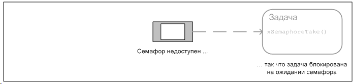
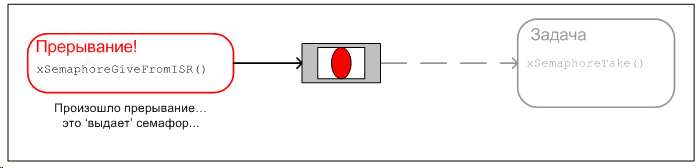
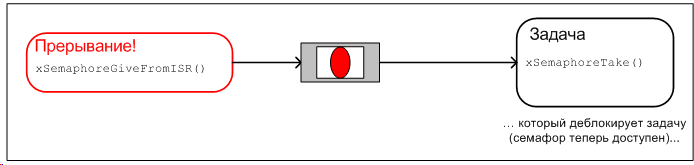
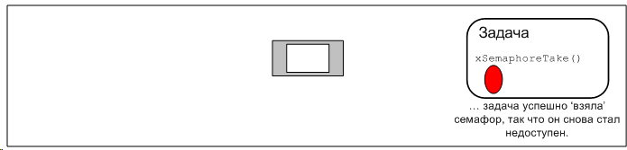
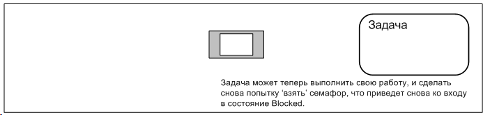
Рис. 27. Использование двоичного семафора для синхронизации задачи и прерывания.
API функция xSemaphoreTake()
'Взять' (Take) семафор означает 'получить' или 'принять' семафор. Семафор можно взять только если он доступен. В классической терминологии семафоров xSemaphoreTake() эквивалентна операции P().
Все различные типы семафоров FreeRTOS, за исключением рекурсивных семафоров, могут быть 'взяты' с использованием функции xSemaphoreTake().
xSemaphoreTake() нельзя использовать из ISR.
portBASE_TYPE xSemaphoreTake( xSemaphoreHandle xSemaphore, portTickType xTicksToWait );
Таблица 13. Параметры и значение возврата функции xSemaphoreTake().
|
Имя параметра |
Описание |
|
xSemaphore |
Семафор, который надо 'взять'. К семафору происходит обращение через переменную xSemaphoreHandle, и семафор должен быть явно создан перед тем, как его можно использовать. |
|
xTicksToWait |
Максимальное время, в котором задача должна оставаться в состоянии Blocked при ожидании семафора, если он еще недоступен. Если xTicksToWait равен 0, то xSemaphoreTake() сделает возврат немедленно, если семафор недоступен. Время блокировки указана в периодах тика, так что абсолютное представленное время зависит от частоты тиков. Можно использовать константу portTICK_RATE_MS для преобразования указанного времени в миллисекундах во время, указанное в тиках. Установка xTicksToWait в значение portMAX_DELAY приведет к тому, что задача будет бесконечно (без таймаута) ожидать семафора, если в файле FreeRTOSConfig.h INCLUDE_vTaskSuspend установлена в 1. |
|
возвращаемое значение |
Возможны два возвращаемых значения: pdPASS - будет возвращено только в том случае, если xSemaphoreTake() успешно получила семафор. Если указано время блокировки (xTicksToWait не равно 0), то возможна ситуация, что задача перешла в состояние Blocked для ожидания семафора (если он не был доступен), но семафор стал доступен до истечения указанного времени блокировки. pdFALSE - семафор недоступен. Если указано время блокировки (xTicksToWait не равно 0), то вызвавшая функцию задача перешла в состояние Blocked для ожидания доступности семафора, но семафор так и не стал доступен после истечения указанного времени блокировки. |
API функция xSemaphoreGiveFromISR()
Все различные типы семафоров FreeRTOS, за исключением рекурсивных семафоров, могут быть 'выданы' с использованием функции xSemaphoreGiveFromISR().
xSemaphoreGiveFromISR() - специальная форма функции xSemaphoreGive(), которая специально предназначена для использования из ISR.
portBASE_TYPE xSemaphoreGiveFromISR( xSemaphoreHandle xSemaphore,
portBASE_TYPE *pxHigherPriorityTaskWoken );
Таблица 14. Параметры и значение возврата функции xSemaphoreGiveFromISR()
|
Имя параметра |
Описание |
|
xSemaphore |
Семафор, который надо 'дать'. К семафору происходит обращение через переменную xSemaphoreHandle, и семафор должен быть явно создан перед тем, как его можно использовать. |
|
pxHigherPriorityTaskWoken |
Возможен случай, что один и тот же семафор будет блокировать одну или большее количество задач на ожидании доступности семафора. Вызов xSemaphoreGiveFromISR() может сделать семафор доступным, так что это приведет к выходу таких задач из состояния Blocked. Если вызов xSemaphoreGiveFromISR() привел к выходу задачи из состояния Blocked, и у разблокированной задачи приоритет выше, чем у текущей выполняющейся задачи, (задача, которая была остановлена ISR прерывания), то xSemaphoreGiveFromISR() установит внутри себя *pxHigherPriorityTaskWoken в значение pdTRUE. Если xSemaphoreGiveFromISR() установит это значение в pdTRUE, то должно быть выполнено переключение контекста перед выходом из ISR. Это приведет к тому, что выход из ISR будет произведен сразу прямо в задачу с наивысшим приоритетом, находящуюся в состояние Ready. |
|
возвращаемое значение |
Возможны два возвращаемых значения: pdPASS - будет возвращено только в том случае, если вызов xSemaphoreGiveFromISR() был успешным. pdFAIL - если семафор уже доступен, он не может быть предоставлен, и xSemaphoreGiveFromISR() вернет pdFAIL. |
Пример 12. Использование двоичного семафора для синхронизации задачи с прерыванием
Этот пример использует двоичный семафор для разблокировки задачи их обработчика прерывания (ISR) - чем достигается эффективная синхронизация задачи с прерыванием.
Простая периодическая задача используется для генерации программного прерывания (software interrupt) каждые 500 миллисекунд. Программное прерывание используется для удобства, потому что трудно отслеживать реальные прерывания IRQ от эмулированного DOS-окружения. Листинг 44 показывает реализацию периодической задачи. Имейте в виду, что задача печатает строку перед и после генерации прерывания. Это позволяет явно продемонстрировать в выводе последовательность выполнения приложения.
static void vPeriodicTask( void *pvParameters )
{
for( ;; )
{
/* Эта задача используется просто для 'симуляции' прерывания,
генерируемого через программное прерывание каждые 500 мс. */
vTaskDelay( 500 / portTICK_RATE_MS );
/* Генерация прерывания, печать в консоль сообщения до и после
последовательности, так что последовательность выполнения
хорошо видна при выполнении примера. */
vPrintString( "Periodic task - About to generate an interrupt.\r\n" );
__asm{ int 0x82 } /* Эта строка генерирует прерывание. */
vPrintString( "Periodic task - Interrupt generated.\r\n\r\n\r\n" );
}
}
Листинг 45 показывает реализацию задачи обработчика - задача, которая синхронизирована с программным прерыванием через использование двоичного семафора. Снова сообщение выводится на печать при каждой итерации задачи, так что последовательность, в котором выполняются задача и прерывание, хорошо видна при выполнении примера.
Листинг 45. Реализация задачи обработчика (handler task), т. е. задачи, которая засинхронизирована с прерыванием, в примере 12:
static void vHandlerTask( void *pvParameters )
{
/* Как и большинство задач, эта задача реализована на основе бесконечного
цикла. */
for( ;; )
{
/* Использование семафора для ожидания события. Семафор был создан перед
запуском шедулера, т. е. перед тем, как эта задача была запущена
в первый раз. Задача блокируется на бесконечное время, так что
возврат из функции xSemaphoreTake() произойдет только после успешного
'взятия' (получения) семафора. Таким образом, здесь не нужно
проверять результат возврата функции xSemaphoreTake(). */
xSemaphoreTake( xBinarySemaphore, portMAX_DELAY );
/* Чтобы управление попало сюда, должно было произойти прерывание.
В этом месте кода обычно стоит обработка события, в нашем же случае
вся обработка заключается в простом выводе сообщения. */
vPrintString( "Handler task - Processing event.\r\n" );
}
}
Листинг 46 показывает реальный обработчик прерывания ISR. Он выполняет очень мало действий, кроме как 'выдает' семафор для разблокировки задачи обработчика. Обратите внимание, как используется параметр pxHigherPriorityTaskWoken. Он устанавливается в значение pdFALSE перед вызовом xSemaphoreGiveFromISR(), с выполнением переключения контекста, если впоследствии было обнаружено, что pxHigherPriorityTaskWoken равно pdTRUE.
Синтаксис определения ISR и вызов макроса для переключения контекста привязан к специфической платформе порта Open Watcom DOS, и может отличаться от других портов. Пожалуйста обратитесь к примерам, которые включены в демо-приложения для используемого Вами порта FreeRTOS, чтобы найти актуальный, требуемый для Вашего порта синтаксис.
static void __interrupt __far vExampleInterruptHandler( void )
{
static portBASE_TYPE xHigherPriorityTaskWoken;
xHigherPriorityTaskWoken = pdFALSE;
/* 'Дать' семафор для разблокировки задачи. */
xSemaphoreGiveFromISR( xBinarySemaphore, &xHigherPriorityTaskWoken );
if( xHigherPriorityTaskWoken == pdTRUE )
{
/* Выдача семафора разблокирует задачу, и приоритет разблокированной
задачи выше, чем у текущей выполняющейся задачи - поэтому контекст
выполнения переключается принудительно в разблокированную (с более
высоким приоритетом) задачу.
ВНИМАНИЕ: макрос, реально используемый для переключения контекста
из ISR, зависит от конкретного порта FreeRTOS. Здесь указано
имя макроса, корректное для порта Open Watcom DOS. Другие порты
FreeRTOS могут использовать другой синтаксис. Для определения
используемого синтаксиса обратитесь к примерам, предоставленным
вместе с портом FreeRTOS. */
portSWITCH_CONTEXT();
}
}
Функция main() просто создает двоичный семафор и задачи, инсталлирует обработчик прерывания и запускает шедулер. Реализация показана в листинге 47.
int main( void )
{
/* Перед использованием семафор должен быть явно создан. В этом примере
создается двоичный семафор. */
vSemaphoreCreateBinary( xBinarySemaphore );
/* Инсталляция обработчика прерывания ISR. */
_dos_setvect( 0x82, vExampleInterruptHandler );
/* Поверка - успешно ли создан семафор. */
if( xBinarySemaphore != NULL )
{
/* Создание задачи обработчика. Это задача, которая засинхронизирована с
прерыванием (ISR). Задача обработчика создается с самым высоким
приоритетом, чтобы обеспечить его немедленный запуск после выхода
из ISR. В нашем случае выбран приоритет 3. */
xTaskCreate( vHandlerTask, "Handler", 1000, NULL, 3, NULL );
/* Создание задачи, которая будет периодически генерировать программное
прерывание. Задача создается с приоритетом меньшим, чем задача
обработчика, чтобы обеспечить вытеснение задачей обработчика,
когда задача обработчика выходит из состояния Blocked. */
xTaskCreate( vPeriodicTask, "Periodic", 1000, NULL, 1, NULL );
/* Запуск шедулера, после чего задачи запустятся на выполнение. */
vTaskStartScheduler();
}
/* Если все хорошо, то управление в main() никогда не дойдет до этой точки,
и теперь шедулер будет управлять задачами. Если main() довела управление
до этого места, то это может означать, что не хватает памяти кучи (heap)
для создания специальной задачи ожидания (idle task, об этой задаче
далее). Часть 5 предоставляет больше информации по управлению памятью. */
for( ;; );
}
Пример 12 производит вывод, показанный на рисунке 28. Как и ожидалось, задача обработчика (Handler) запускается немедленно после генерации прерывания (Interrupt), так что вывод из задачи обработчика делит на части вывод, производимый периодической задачей (Periodic). Более подробно процесс описан на рисунке 29.
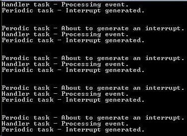
Рис. 28. Вывод, который производит при выполнении пример 12
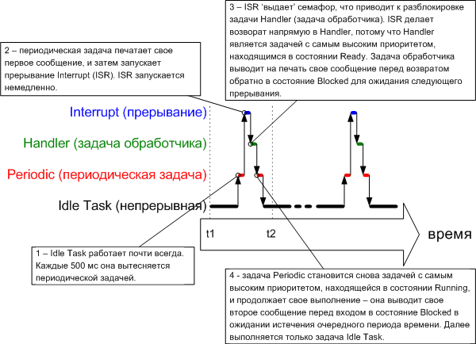
Рис. 29. Последовательность выполнения примера 12
3.3. Семафоры со счетчиком
Пример 12 продемонстрировал двоичный семафор, который использовался для синхронизации задачи с прерыванием. Последовательность выполнения была следующей:
1. Происходит прерывание.
2. Запускается ISR, 'выдает' семафор для разблокировки задачи обработчика.
3. Задача обработчика сразу запускается после завершения ISR. Первое, что задача обработчика делает - она 'берет' семафор.
4. Задача обработчика выполняет обработку события перед новой попыткой 'взять' семафор - и входит в состояние Blocked, если семафор еще недоступен.
Этот сценарий хорошо подходит для случая, когда прерывания могут произойти только с относительно низкой частотой. Если же произойдет другое прерывание до того, как задача обработчика завершит свою обработку первого захваченного семафором события, то двоичный семафор эффективно фиксировал бы событие, позволяя задаче обработчика немедленно обработать новое событие после обработки предыдущего. Задача обработчика не вошла бы в состояние Blocked между обработкой этих двух событий, так как фиксируемый семафор был бы доступен сразу, как только произойдет вызов xSemaphoreTake(). Этот случай показан на рисунке 30.
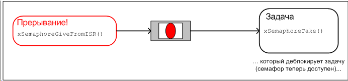
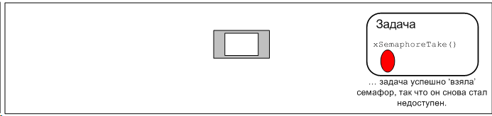
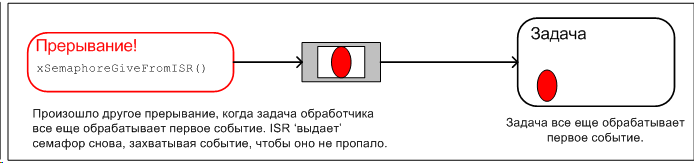
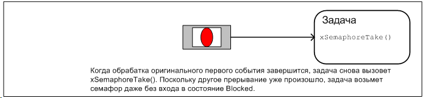
Рис. 30. Двоичный семафор может фиксировать не больше одного события
Рисунок 30 демонстрирует, что двоичный семафор может захватить самое бОльшее только одно событие прерывания. Все последующие события, произошедшие перед обработкой уже захваченного события, будут потеряны. Этого можно избежать, если использовать семафор со счетчиком вместо двоичного семафора.
Так же, как двоичные семафоры можно концептуально сопоставить с очередями, длина которых равна 1, семафоры со счетчиком можно представить как очереди, длина которых больше 1. Задачам не интересны данные, которые сохранены в такой очереди - им просто нужно знать, пуста очередь или нет.
Каждый раз, когда семафору со счетчиком 'дают', в его очереди задействуется пространство (очередь становится непустой). Количество элементов (событий) в очереди показывает значение счетчика семафора.
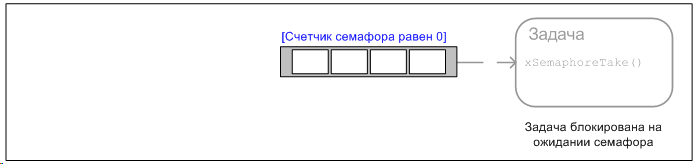
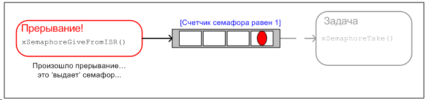
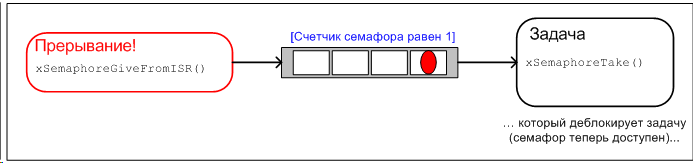
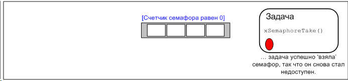
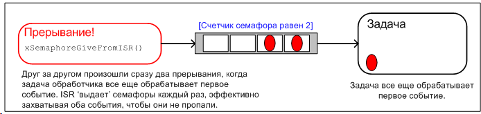
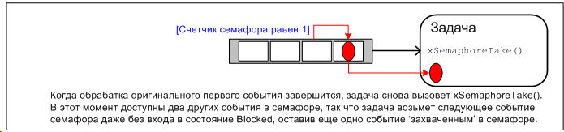
Рис. 31. Использование семафора-счетчика для 'подсчета' событий.
Семафоры со счетчиком обычно используют в следующих случаях:
1. Подсчет событий. В этом сценарии использования ISR 'выдает' семафор каждый раз, когда происходит событие - что инкрементирует значение счетчика семафора при каждой выдаче семафора. Задача обработчика события будет 'брать' семафор каждый раз, когда она обрабатывает событие - что будет декрементировать счетчик семафора при каждом получении семафора. Значение счетчика семафора отражает разницу между количеством произошедших событий и количеством уже обработанных событий. Этот механизм показан на рисунке 31.
Семафоры со счетчиком, используемые для подсчета событий, создаются с начальным значением счетчика, равным 0.
2. Управление ресурсами. В этом сценарии использования значение счетчика показывает количество доступных ресурсов. Для получения контроля над ресурсом задача должна сначала получить семафор - и этим уменьшить значение счетчика семафора. Когда значение счетчика семафора станет равным 0, то это будет означать, что больше нет свободных ресурсов. Когда задача завершает работу с ресурсом, она 'выдает' семафор обратно - увеличивая значение счетчика семафора.
Семафоры со счетчиком, которые используются для управления ресурсами, создаются с начальным значением счетчика, равным количеству доступных ресурсов. В части 4 рассматривается использование семафоров для управления ресурсами.
API функция xSemaphoreCreateCounting()
Хендлы ко всем различным типам семафоров FreeRTOS сохраняются в переменной типа xSemaphoreHandle.
Перед тем, как семафор можно реально использовать, он должен быть сначала создан. Для создания семафора со счетчиком используется API функция xSemaphoreCreateCounting().
xSemaphoreHandle xSemaphoreCreateCounting
( unsigned portBASE_TYPE uxMaxCount,
unsigned portBASE_TYPE uxInitialCount );
Таблица 15. Параметры и значение возврата функции xSemaphoreCreateCounting().
|
Имя параметра |
Описание |
|
uxMaxCount |
Максимальное значение, до которого будет считать семафор. Чтобы продолжить аналогию с очередью, значение uxMaxCount соответствует длине очереди. Когда семафор начинают использовать для подсчета или захвата событий, uxMaxCount будет максимальным количеством событий, которое можно захватить. Когда семафор используется для управления доступом к набору ресурсов, uxMaxCount должно быть установлено в максимальное количество доступных ресурсов. |
|
uxInitialCount |
Начальное значение счетчика семафора после того как он был создан. Когда семафор используется для подсчета или захвата событий, uxInitialCount должно быть установлено в 0 - подразумевается, что в момент создания семафора еще не наступило ни одно событие. Когда семафор используется для управления доступом к набору ресурсов, то uxInitialCount должно быть установлено в значение, равное uxMaxCount - подразумевается, что в момент создания семафора имеются в наличии все доступные ресурсы. |
|
возвращаемое значение |
Если функция вернула NULL, то семафор не создан, так как в куче (heap) FreeRTOS недостаточно свободного места для выделения памяти под структуры данных семафора. Часть 5 предоставляет больше информации по управлению памятью. Если функция вернула не NULL, то семафор создан успешно. Возвращенное значение нужно сохранить как хендл семафора для его дальнейшего использования. |
Пример 13. Использование считающего семафора для синхронизации задачи с прерыванием
Пример 13 улучшает реализацию примера 12 путем использования семафора со счетчиком вместо двоичного семафора. Функция main() изменена для использования вызова xSemaphoreCreateCounting() вместо vSemaphoreCreateBinary(). Вызов новой API функции показан в листинге 49.
/* Перед использованием семафора он должен быть явно создан. В этом примере
создается семафор со счетчиком. Семафор создается для максимального
значения счета 10, и начальным значением счетчика 0. */
xCountingSemaphore = xSemaphoreCreateCounting( 10, 0 );
Для симуляции возникновения нескольких событий с высокой частотой изменена подпрограмма обработчика прерывания ISR, чтобы 'выдавать' семафор больше одного раза за одно прерывание. Каждое событие захватывается в значении счетчика семафора. Измененная ISR показана в листинге 50.
static void __interrupt __far vExampleInterruptHandler( void )
{
static portBASE_TYPE xHigherPriorityTaskWoken;
xHigherPriorityTaskWoken = pdFALSE;
/* 'Выдача' семафора несколько раз. Первая выдача разблокирует задачу
обработчика следующие выдачи демонстрируют, как семафор захватывает
события, чтобы позволить задаче обработчика обработать их друг за
другом, и не потерять ни одного события. Это симулирует появление
нескольких прерываний, полученных процессором, несмотря на то, что в этом
случае события симулируются внутри одного возникшего прерывания. */
xSemaphoreGiveFromISR( xCountingSemaphore, &xHigherPriorityTaskWoken );
xSemaphoreGiveFromISR( xCountingSemaphore, &xHigherPriorityTaskWoken );
xSemaphoreGiveFromISR( xCountingSemaphore, &xHigherPriorityTaskWoken );
if( xHigherPriorityTaskWoken == pdTRUE )
{
/* Выдача семафора разблокировала задачу, и приоритет разблокированной
задачи выше, чем у текущей задачи - принудительно переключаем
контекст выполнения, чтобы обеспечить возврат из ISR напрямую
в разблокированную (которая имеет самый высокий приоритет) задачу.
ВНИМАНИЕ: макрос, реально используемый для переключения контекста
из ISR, зависит от конкретного порта FreeRTOS. Здесь указано имя
макроса, корректное для порта Open Watcom DOS. Другие порты FreeRTOS
могут использовать другой синтаксис. Для определения используемого
синтаксиса обратитесь к примерам, предоставленным вместе с портом
FreeRTOS. */
portSWITCH_CONTEXT();
}
}
Все остальные функции остались неизменными, как в примере 12.
Вывод, производимый примером 13, показан на рисунке 32. Как можно увидеть, задача обработчика обрабатывает все три (симулированные) события каждый раз, когда генерируется прерывание. События захватываются с значении счетчика семафора, что позволяет задаче обработчика обработать все события друг за другом.
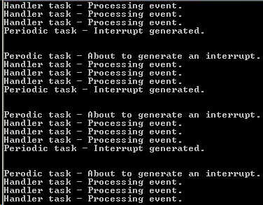
3.4. Использование очередей внутри обработчика прерывания (ISR)
Функции xQueueSendToFrontFromISR(), xQueueSendToBackFromISR() и xQueueReceiveFromISR() являются защищенными версиями функций xQueueSendToFront(), xQueueSendToBack() и xQueueReceive() соответственно, которые можно безопасно использовать в коде ISR.
Семафоры используются для передачи сообщений (из ISR в основную программу). Очереди используются как для передачи сообщений, так и для передачи данных (из ISR в основную программу).
API функции xQueueSendToFrontFromISR() и xQueueSendToBackFromISR()
xQueueSendFromISR() является эквивалентной и полностью соответствует xQueueSendToBackFromISR().
Прототип API функции xQueueSendToFrontFromISR():
portBASE_TYPE xQueueSendToFrontFromISR
( xQueueHandle xQueue,
void *pvItemToQueue
portBASE_TYPE *pxHigherPriorityTaskWoken );
Прототип API функции xQueueSendToBackFromISR():
portBASE_TYPE xQueueSendToBackFromISR
( xQueueHandle xQueue,
void *pvItemToQueue
portBASE_TYPE *pxHigherPriorityTaskWoken );
Таблица 16. Параметры и значение возврата функций xQueueSendToFrontFromISR() и xQueueSendToBackFromISR().
|
Имя параметра |
Описание |
|
xQueue |
Хендл очереди, в которую данные посылаются (записываются). Хендл очереди берут из значения, которое вернула функция xQueueCreate() при создании очереди. |
|
pvItemToQueue |
Указатель на данные, которые будут скопированы в очередь. Размер каждого элемента очереди, который она может хранить, устанавливается при создании очереди, таким образом это количество байт будет скопировано из памяти по указателю pvItemToQueue в область хранения данных, принадлежащую очереди. |
|
pxHigherPriorityTaskWoken |
Возможен случай, что одна и та же очередь будет блокировать одну или большее количество задач на ожидании доступности данных. Вызов xQueueSendToFrontFromISR() или xQueueSendToBackFromISR() может сделать данные доступными, так что это приведет к выходу таких задач из состояния Blocked. Если вызов функции привел к выходу задачи из состояния Blocked, и у разблокированной задачи приоритет выше, чем у текущей выполняющейся задачи, (задача, которая была прервана ISR), то функция установит внутри себя *pxHigherPriorityTaskWoken в значение pdTRUE. Если xQueueSendToFrontFromISR() или xQueueSendToBackFromISR() установит это значение в pdTRUE, то должно быть выполнено переключение контекста выполнения перед выходом из ISR. Это приведет к тому, что выход из ISR будет произведен сразу прямо в задачу с наивысшим приоритетом, находящуюся в состояние Ready. |
|
возвращаемое значение |
Возможны два возвращаемых значения: pdPASS - будет возвращено только в том случае, когда данные были успешно отправлены в очередь. errQUEUE_FULL - если данные не были отправлены в очередь, так как очередь уже полна. |
Эффективное использование очереди
Большинство демо-приложений, включенных в загружаемый пакет FreeRTOS, включают в себя простой драйвер UART, который использует очереди для передачи символов в обработчик прерывания передачи и для передачи символов из обработчика прерывания приема. Каждый символ, который был отправлен или принят, индивидуально передается через очередь. Драйверы UART реализованы таким способом только для того, чтобы продемонстрировать использование очереди изнутри ISR. Индивидуальная передача символов через очередь чрезвычайно неэффективна (особенно для высоких скоростей), и не рекомендуется для рабочего кода готовых изделий. Более эффективная техника включает в себя следующее:
Пример 14. Отправка и прием на очереди с использованием прерывания
Этот пример демонстрирует использование xQueueSendToBackFromISR() и xQueueReceiveFromISR() внутри одного и того же прерывания. Как и было ранее, для удобства в примере используется программное прерывание.
В примере создается периодическая задача, которая отправляет пять чисел в очередь каждые 200 миллисекунд. Она генерирует программное прерывание только после того, как все пять значений будут отправлены. Реализация задачи показана в листинге 53.
static void vIntegerGenerator( void *pvParameters )
{
portTickType xLastExecutionTime;
unsigned portLONG ulValueToSend = 0;
int i;
/* Инициализация переменной, используемой в вызове vTaskDelayUntil(). */
xLastExecutionTime = xTaskGetTickCount();
for( ;; )
{
/* Это периодическая задача. Блокировка до времени, когда нужно будет
запуститься снова. Задача будет запускаться каждые 200 мс. */
vTaskDelayUntil( &xLastExecutionTime, 200 / portTICK_RATE_MS );
/* Отправка инкрементируемого числа в очередь пять раз. Значения будут
прочитаны из очереди внутри ISR. ISR всегда опустошит очередь, так
что гарантируется, что эта задача будет в состоянии записать
в очередь все пять значений числа, так что время блокировки
не требуется. */
for( i = 0; i < 5; i++ )
{
xQueueSendToBack( xIntegerQueue, &ulValueToSend, 0 );
ulValueToSend++;
}
/* Принудительно инициализируем прерывание, так чтобы сработавшая ISR
могла прочитать значения из очереди. */
vPrintString( "Generator task - About to generate an interrupt.\r\n" );
__asm{ int 0x82 } /* Эта строка генерирует прерывание. */
vPrintString( "Generator task - Interrupt generated.\r\n\r\n\r\n" );
}
}
ISR делает повторы вызовов xQueueReceiveFromISR() до тех пор, пока не будут удалены из очереди все значения, записанные в неё, т. е. пока очередь не станет пустой. Последние два бита каждого принятого значения используются как индекс в массиве строк, и указатель на строку в соответствующей индексной позиции будет отправлен в другую очередь с использованием вызова xQueueSendFromISR(). Реализация ISR показана в листинге 54.
static void __interrupt __far vExampleInterruptHandler( void )
{
static portBASE_TYPE xHigherPriorityTaskWoken;
static unsigned long ulReceivedNumber;
/* Строки декларируется как static const, чтобы они не были
размещены в стеке ISR, и существовали всегда, даже когда
ISR не выполняется. */
static const char *pcStrings[] =
{
"String 0\r\n",
"String 1\r\n",
"String 2\r\n",
"String 3\r\n"
};
xHigherPriorityTaskWoken = pdFALSE;
/* Цикл до полного опустошения очереди. */
while( xQueueReceiveFromISR( xIntegerQueue,
&ulReceivedNumber,
&xHigherPriorityTaskWoken ) != errQUEUE_EMPTY )
{
/* Обрезка принятого значения, чтобы оставить только последние два бита
(значения от 0 до 3), затем отправка в другую очередь указателя
на строку, которая соответствует обрезанному значению. */
ulReceivedNumber &= 0x03;
xQueueSendToBackFromISR( xStringQueue,
&pcStrings[ ulReceivedNumber ],
&xHigherPriorityTaskWoken );
}
/* Мы сделали чтение очереди и отправку через другую очередь, что должно
разблокировать задачу, которая имеет приоритет выше, чем та, что работала
до вызова ISR? Если это так, то здесь делаем принудительное переключение
контекста выполнения. */
if( xHigherPriorityTaskWoken == pdTRUE )
{
/* ВНИМАНИЕ: макрос, реально используемый для переключения контекста
из ISR, зависит от конкретного порта FreeRTOS. Здесь указано
имя макроса, корректное для порта Open Watcom DOS. Другие порты
FreeRTOS могут использовать другой синтаксис. Для определения
используемого синтаксиса обратитесь к примерам, предоставленным
вместе с портом FreeRTOS. */
portSWITCH_CONTEXT();
}
}
Задача, которая принимает указатели на строки из ISR, просто блокируется на очереди, до того момента, как в очереди появится сообщение (указатель на строку), и печатает каждую строку, как она была принята. Реализация принимающей строки задачи показана в листинге 55.
static void vStringPrinter( void *pvParameters )
{
char *pcString;
for( ;; )
{
/* Блокировка на очереди для ожидания поступления данных. */
xQueueReceive( xStringQueue, &pcString, portMAX_DELAY );
/* Вывод на печать принятой строки. */
vPrintString( pcString );
}
}
Как обычно, функция main() создает требуемые очереди и задачи перед запуском шедулера. Её реализация показана в листинге 56.
int main( void )
{
/* Перед тем, как очередь можно использовать, она должна быть сначала
создана. Создание обоих очередей, используемых в этом примере. Одна
очередь может сохранять переменные типа unsigned long, другая может
сохранять указатели на строки (тип char*). Обе очереди могут запоминать
максимум 10 элементов. Реальное приложение должно проверять значение
возврата функции xQueueCreate, чтобы убедиться, что очереди были
успешно созданы. */
xIntegerQueue = xQueueCreate( 10, sizeof( unsigned long ) );
xStringQueue = xQueueCreate( 10, sizeof( char * ) );
/* Установка обработчика прерывания. */
_dos_setvect( 0x82, vExampleInterruptHandler );
/* Создание задачи, которая использует очередь для передачи целых чисел
в ISR. Эта задача создается с приоритетом 1. */
xTaskCreate( vIntegerGenerator, "IntGen", 1000, NULL, 1, NULL );
/* Создание задачи, выводит на печать строки, отправленные из ISR.
Эта задача создается с самым высоким приоритетом 2. */
xTaskCreate( vStringPrinter, "String", 1000, NULL, 2, NULL );
/* Запуск шедулера, после чего созданные задачи начнут выполняться. */
vTaskStartScheduler();
/* Если все хорошо, то управление в main() никогда не дойдет до этой точки,
и теперь шедулер будет управлять задачами. Если main() довела управление
до этого места, то это может означать, что не хватает памяти кучи (heap)
для создания специальной задачи ожидания (idle task, об этой задаче
далее). Часть 5 предоставляет больше информации по управлению
памятью. */
for( ;; );
}
Вывод, производимый примером 14, показан на рисунке 33. Как можно увидеть, ISR принимает 5 целых чисел и в ответ производит 5 строк. Более подробно процесс рассматривается на рисунке 34.
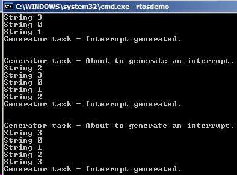
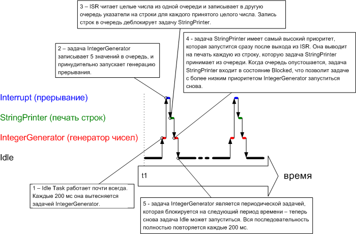
3.5. Вложенные прерывания
Свежие порты FreeRTOS позволяет вложенность прерываний, т. е. во время работы одного ISR может сработать другое прерывание, и будет запущен другой ISR (это называется вложенность прерываний друг в друга). Эти порты требуют одной или двух констант, заданных в хедере FreeRTOSConfig.h. Константы описаны в таблице 17.
Примечание переводчика: к сожалению, в настоящее время (октябрь 2011 года, FreeRTOSv7.0.2) поддержка констант configKERNEL_INTERRUPT_PRIORITY и configMAX_SYSCALL_INTERRUPT_PRIORITY есть только на небольшом количестве платформ (например на Atmel ARM7 этого пока нет, хотя архитектура позволяет назначать приоритеты аппаратных прерываний). Среди портов, которые содержат установку configKERNEL_INTERRUPT_PRIORITY, имеются пока только Cortex-M3, PIC24, dsPIC, PIC32, SuperH и RX600. Среди портов, которые содержат установку configMAX_SYSCALL_INTERRUPT_PRIORITY, имеются пока только PIC32, RX600 и Cortex M3.
Таблица 17. Константы, управляющие вложенностью прерываний.
|
Константа |
Описание |
|
configKERNEL_INTERRUPT_PRIORITY |
Установка приоритета прерывания, используемого для тиков FreeRTOS. Если порт не использует константу configMAX_SYSCALL_INTERRUPT_PRIORITY, то любое прерывание, которое использует защищенные для прерывания функции FreeRTOS API, должно также выполняться с этим приоритетом. |
|
configMAX_SYSCALL_INTERRUPT_PRIORITY |
Устанавливает наивысший приоритет, из которого могут быть вызваны защищенные для прерываний функции FreeRTOS API. |
Модель полной поддержки вложенности прерываний создается путем установки configMAX_SYSCALL_INTERRUPT_PRIORITY в приоритет выше, чем configKERNEL_INTERRUPT_PRIORITY. Это демонстрируется на рисунке 35, который показывает гипотетический сценарий, где configMAX_SYSCALL_INTERRUPT_PRIORITY установлено в значение 3, и configKERNEL_INTERRUPT_PRIORITY установлено в 1. Как показано, эквивалентный гипотетический микроконтроллер имеет семь разных уровней приоритета. Значение 7 - просто произвольное число для этого гипотетического примера, и оно вовсе не означает, что будет представлено в какой-то конкретной архитектуре микроконтроллера.
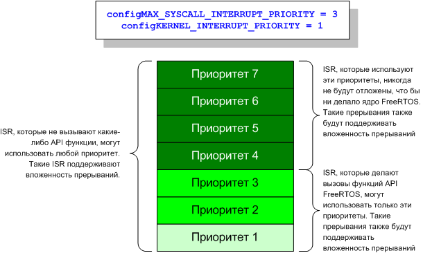
Комментарии:
Примечание для пользователей ARM Cortex M3
Микроконтроллеры Cortex M3 используют обратную нумерацию приоритетов прерывания - приоритет с низким числовым номером логически соответствует высокому приоритету прерывания. Это кажется парадоксальным, и об этом легко забыть! Если хотите назначить прерыванию низкий приоритет, то Вы должны назначить ему бОльшее числовое значение приоритета. Не назначайте ему приоритет 0 (или другое число с малым значением), так как в результате прерывание получит самый высокий приоритет в системе 0 - и таким образом потенциально может привести систему к полному отказу, если приоритет прерывания окажется выше configMAX_SYSCALL_INTERRUPT_PRIORITY.
Самый низкий приоритет в ядре Cortex M3 равен 255, хотя разные поставщики ядер Cortex M3 реализуют разное количество бит приоритета и предоставляют функции библиотек, которые рассчитаны на указание приоритетов разными способами. Например, для STM32 самый низкий приоритет может быть указан в библиотеке драйвера ST как 15, а самый высокий приоритет может быть указан как 0.
123